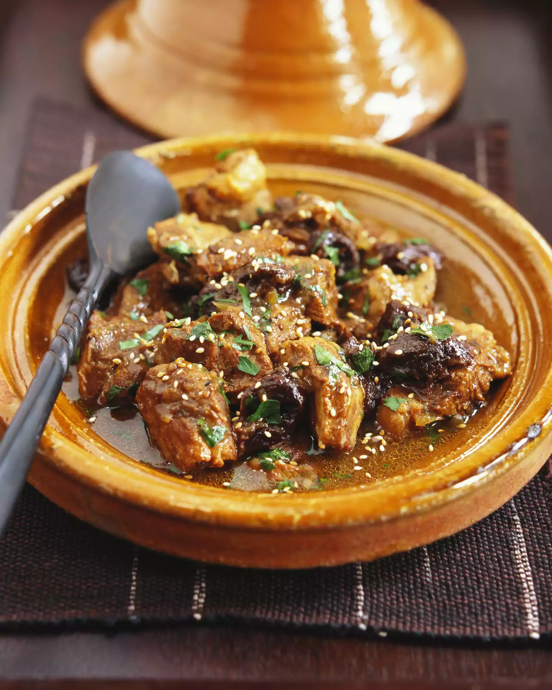

Tangia

What is Tangia ?
This slow-cooked Marrakesh dish is traditionally prepared in a clay pot
called a tangia. Rather than cook the meat at home, the tangia would be
brought to an oven adjacent to a "hammam," where it would slow cook in the
ashes from the fire used to heat the bathhouse. Because tangia was
popular among men, particularly unmarried workers, it's sometimes referred
to as "bachelor's stew." It's also served as a family dish or restaurant
offering.
Ingredients
- 4 pounds lamb, or beef, cut into 4- to 5-inch pieces
- 1 medium onion, chopped
- 6 to 8 cloves garlic, chopped
- 1 large handful fresh parsley, or cilantro, chopped
- 2 teaspoons ras el hanout
- 2 teaspoons cumin
- 1 1/4 teaspoons salt
- 1 teaspoon saffron threads, heated gently and crumbled
- 1 teaspoon turmeric
- 1 teaspoon ginger
- 1/2 teaspoon freshly ground black pepper
- 1/2 teaspoon freshly ground white pepper
- 1/2 preserved lemon rind, finely chopped
- 1/2 preserved lemon, cut into wedges
- 1/4 cup olive oil
- 3 to 4 tablespoons water
Instructions
- Gather the ingredients.
- Mix the meat with the onion, garlic, parsley or cilantro, spices, and chopped preserved lemon rind. Transfer the seasoned meat mixture to the tangia (or another deep ovenproof cooking dish). Add the olive oil, or smen (salted fermented butter—if using), preserved lemon wedges and water.
- Cover the top of the tangia with a circle of parchment paper (it should be cut a little larger than the diameter of the opening). Cover the parchment paper with a layer of aluminum foil, wrapping and sealing the foil snugly to the tangia. Pierce the foil and parchment paper in 2 or 3 places with a fork.
- Place the tangia in a cold oven, set the thermostat to 275 F/140 C, and turn the oven on. Leave the tangia for 5 to 6 hours, at which time you can check to see if the meat is adequately cooked. It should fall off the bone and be buttery-tender.
- Serve the tangia on a large communal platter with Moroccan bread (khobz) for scooping up the meat and sauce.
- Serve and enjoy!
Notes
If your tangia is too tall for your oven, lay it on its side on an angle, with the top propped up on a piece of bakeware, such as an inverted loaf pan.
Return Home